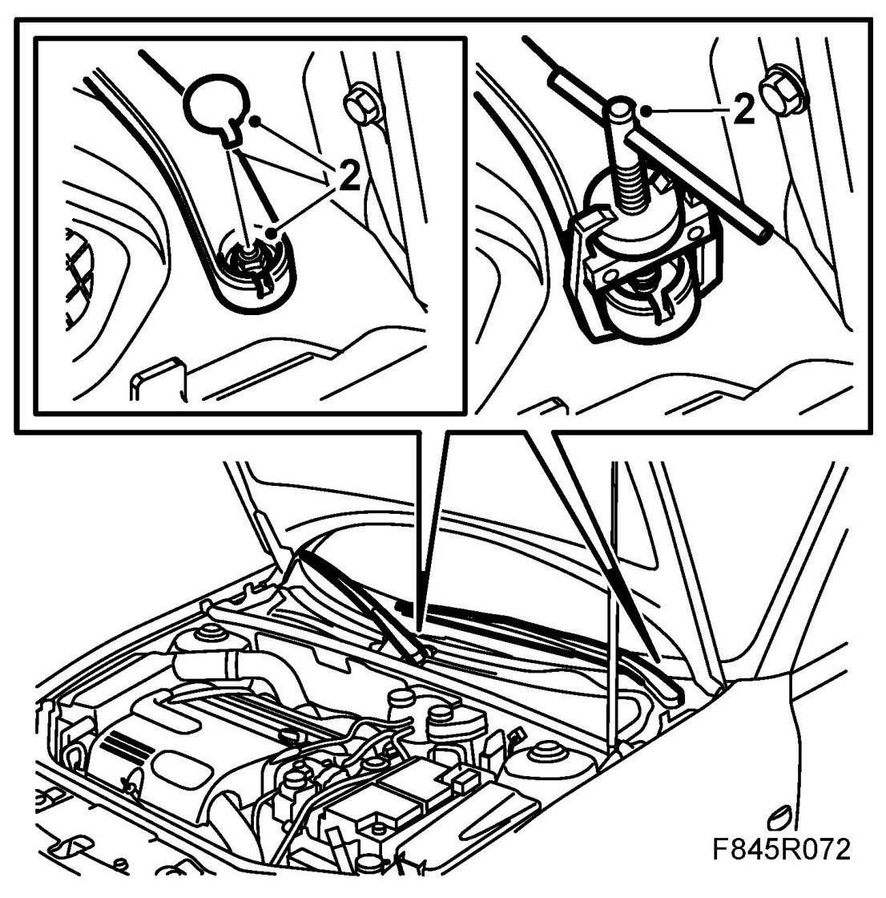
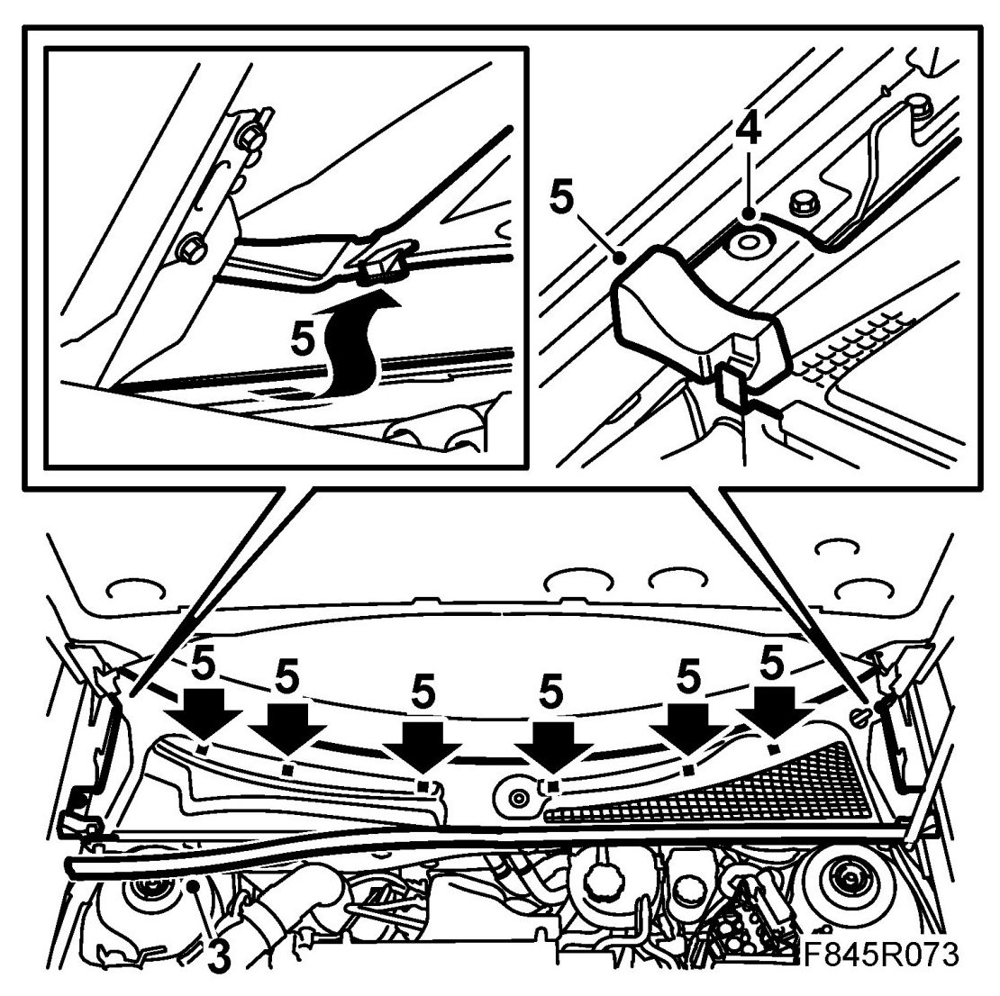
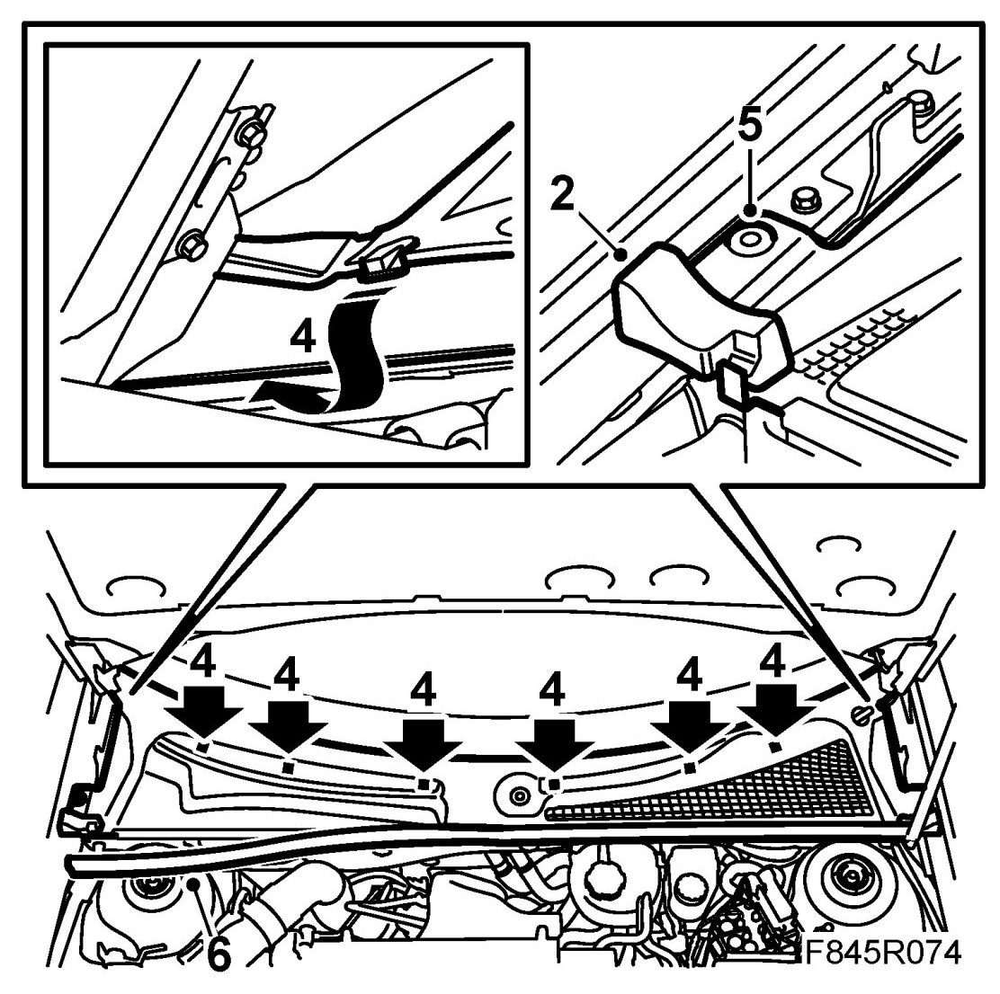
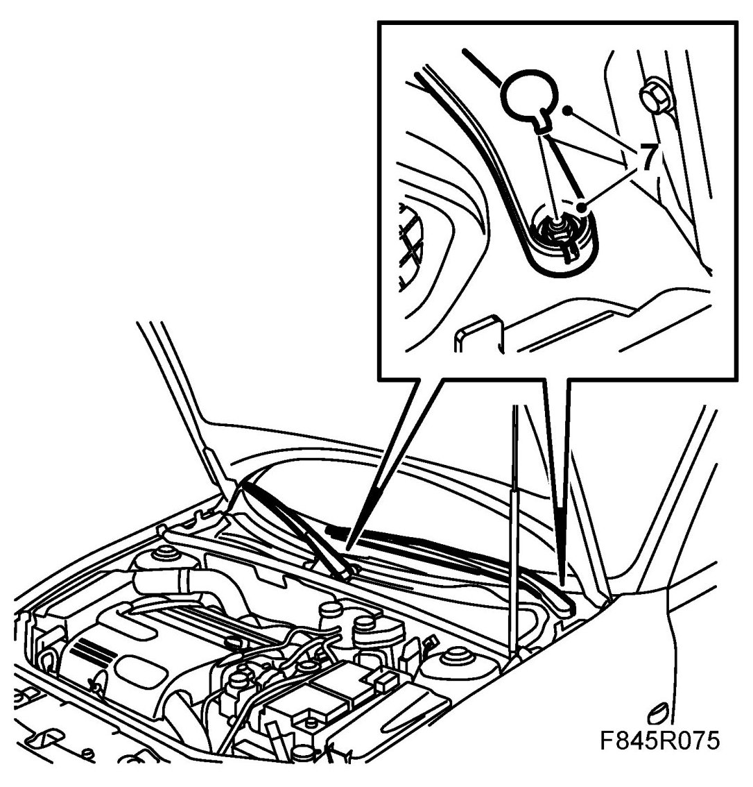

Bulkhead Cover
Bulkhead Cover
To remove
1. Open the bonnet.
2. Remove the cover from the wiper arms and then the wiper arms.

3. Remove the rear bonnet seal.

4. Remove the clips from the cover.
5. Begin by removing from the passenger side. Lift away the foam block and lift the front edge of the cover to release the rear edges of the catch and clips. Bend the corner tab aside. Continue with the driver's side and loosen the clip and catch under the windscreen.
6. Lift aside the cover.
Cars with water barrier: Remove the water barrier.
To fit
1. Cars with water barrier: Fit the water barrier.
Begin by fitting the cover from the driver's side. Guide the corner towards the windscreen moulding and wiper spindle.
2. Lift aside the rubber block and guide in the catch under the windscreen.

3. Align the cover against the passenger side wiper spindle.
4. Bend down the corner tab so that it passes the hinge and bonnet. Position the corner tab under the windscreen moulding. Guide in the catch under the windscreen and press down the cover to engage the clips.
5. Lift up the rubber blocks and fit the clips.
6. Fit the rear bonnet seal.
7. Fit the wiper arms and wiper arm covers.

8. Check the function of the windscreen wipers.